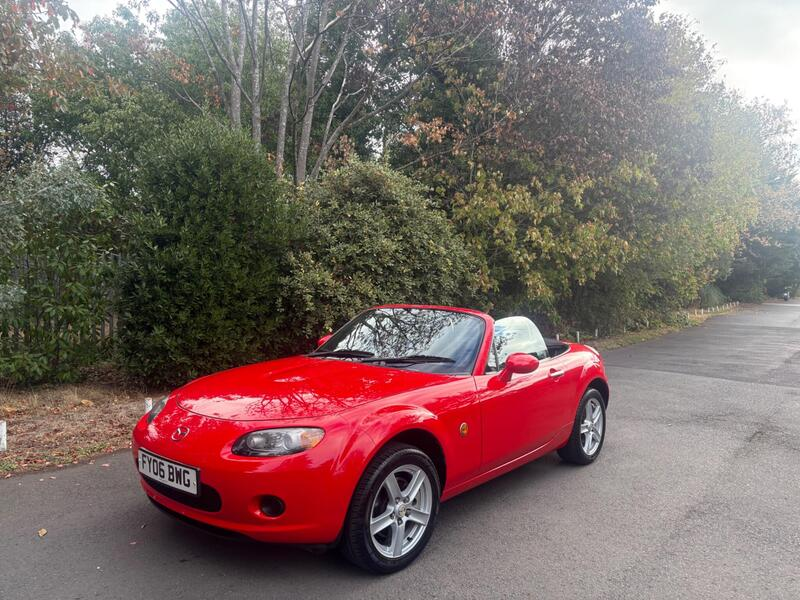
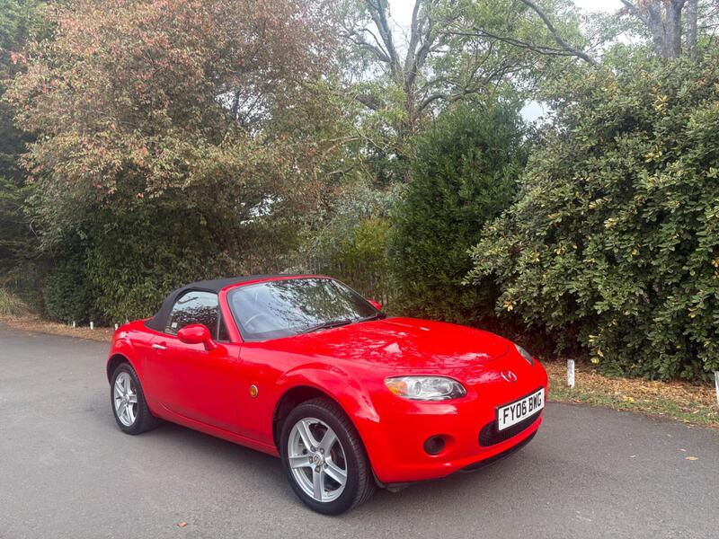
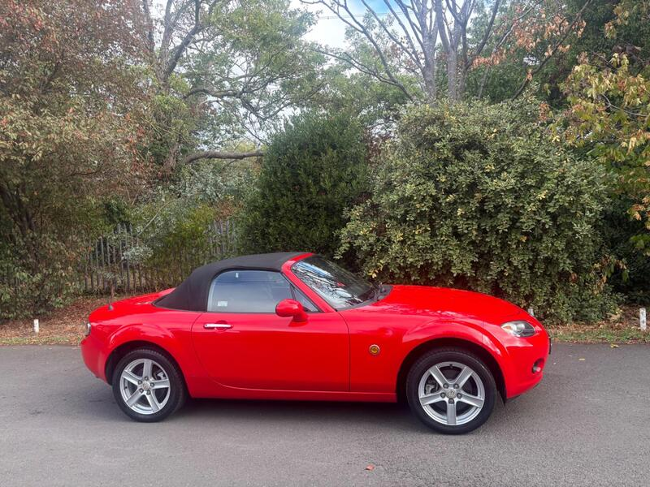
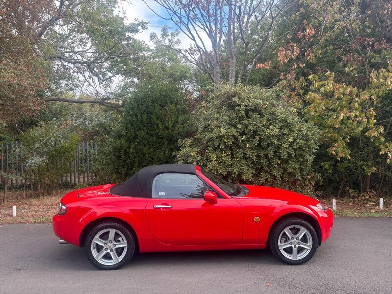

← All 50Ranked #1 of 50




Seller photos from the AutoTrader ad.
✓ Checked 13 Oct
2006 · Mazda MX-5
Mazda MX-5 1.8i
Cheapest way into a low-mileage NC. A strong pick if it's solid underneath.
£1,99059,000 miles · Ashford · 19 mi from GU7
View on AutoTrader ↗Key facts
| Price | £1,990 |
|---|---|
| Year | 2006 |
| Miles | 59,000 |
| Model | Mazda MX-5 1.8i |
| Colour | Red |
| Registration | 2006 (06 reg) |
| Service history | Not stated |
| MOT | May 2027 (ad) |
| Seller | Trade |
| Location | Ashford |
| From GU7 | 19 mi (AutoTrader) |
| Checked | 13 Oct 2026 |
Why buy it
- Lowest-priced NC here at £1,990, only 59k miles
- ULEZ compliant, inspection welcome (ad)
Things to check
Trade seller with a short description, so ask for the history file
Check the rear subframe and sill ends
- Mazda MX-5 NC / NB weak spots
Rear subframe, rear arches and sill ends; NB sills and chassis rails. Underseal can hide rot. Engine mostly bulletproof; timing-chain tensioner, seizing calipers, rear diff leaks, cracking coolant tank.
Seller says (extract)
“Lady owned Since 2024,Mot until May 2027,Service History,Starts and Drives Like new,Convertible Folding Roof,Very Clean and tidy throughout,🌳✅ULEZ COMPLIANT✅🌳Any Test Drive or Inspection Welcome,Don’t delay call today ?…”